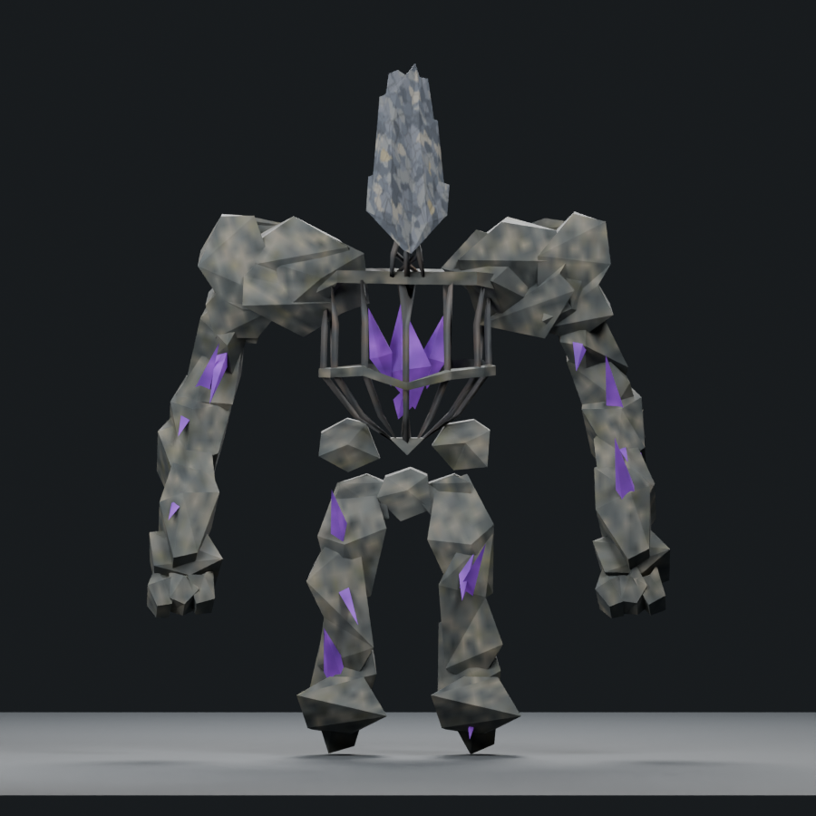
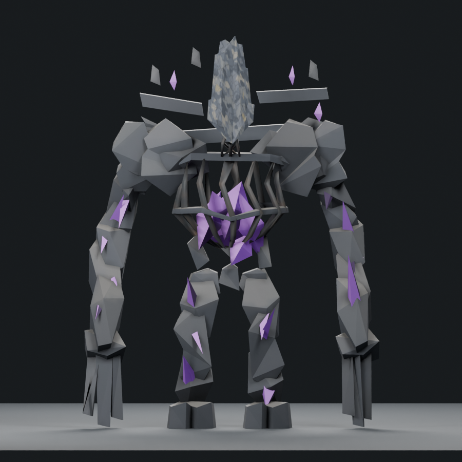
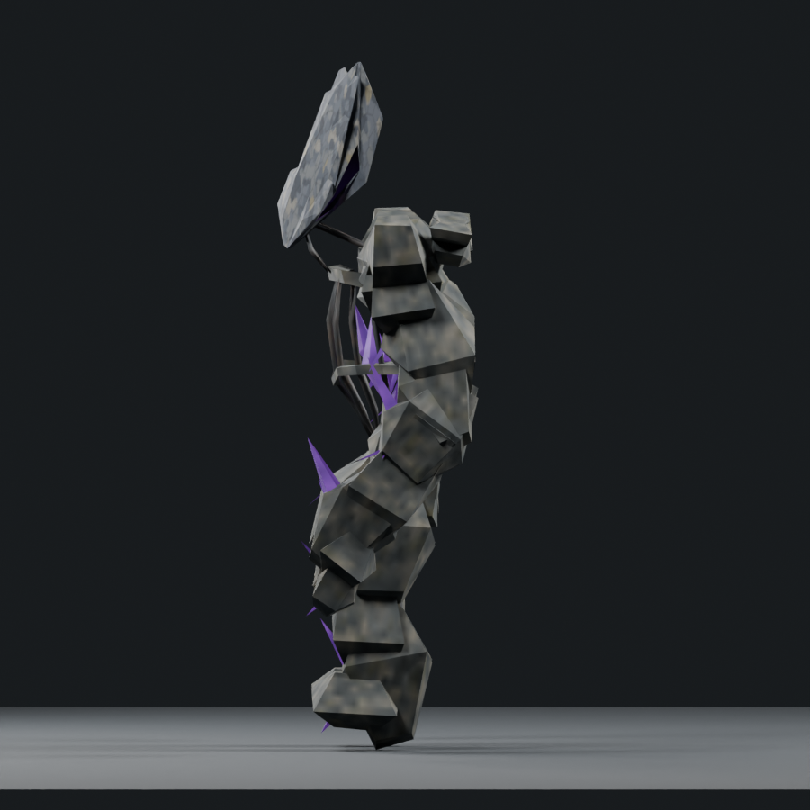
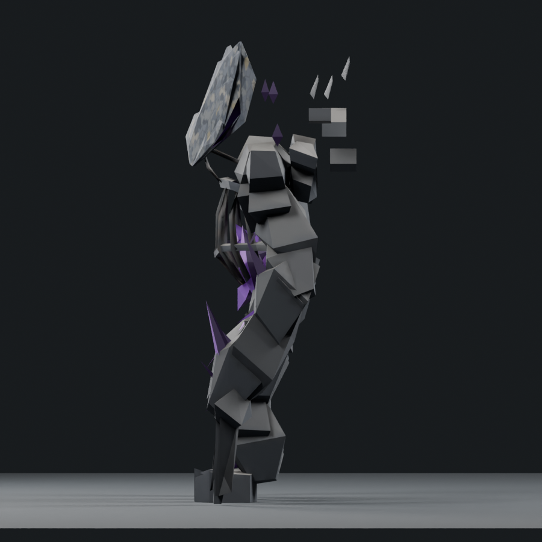
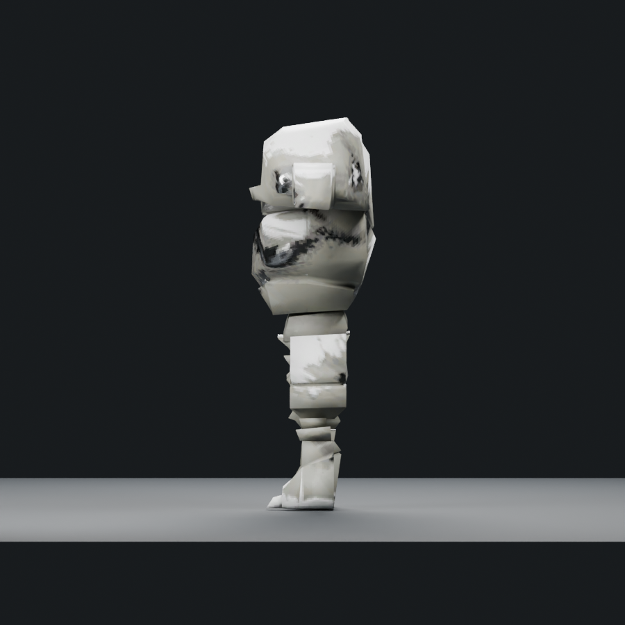
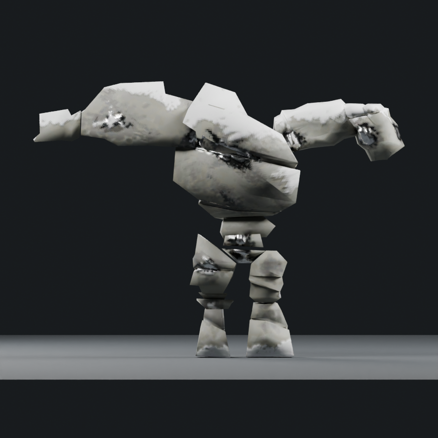
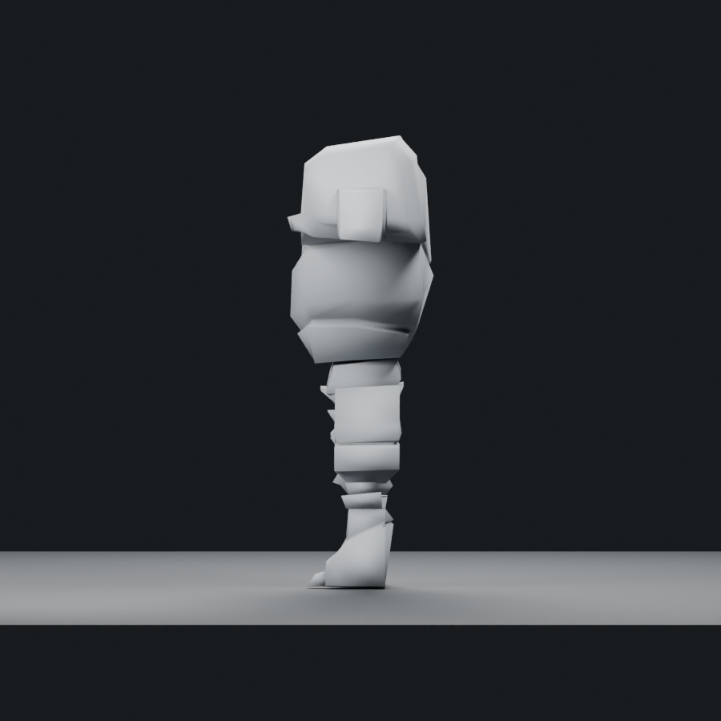

Editable art study; not accepted or installed. The adequate-boss tally remains 1/6. Offline geometry checks and these renders do not establish native animation, collision or frame cost.
Portable skinned model · Editable Blender source · Changes, measurements and remaining gaps · Saved-source verification
1,798 triangles / native donor 1,200 / soft cap 1,800; one mesh/material and four packed 512px maps. Historical models are re-rendered from saved sources with exact current cameras; native donors use the same directions/light recipe with normalized framing. Painted views have their own perspective.




Actual extracted Stone Golem, normalized framing; 1,200 triangles. This is source evidence, not a live game render.



This is a broader correction candidate, not a finished concept match. The crest remains too simple; the shoulders and limbs need more specific long overlapping fractures; the upper cage/core still needs finer organic construction; hands, knuckles and feet remain coarse; and the stone needs authored chips, lichen and fracture detail. The original 44 audit entries remain tracked for art review; these measurements do not close them by visual acceptance.